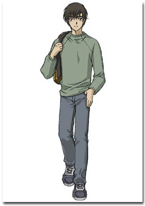
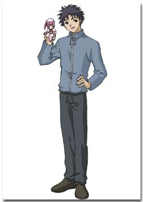
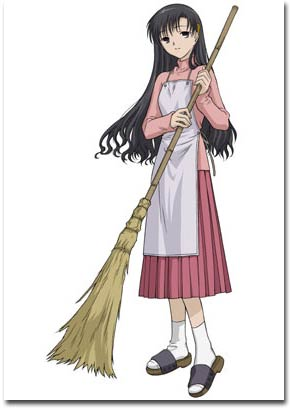
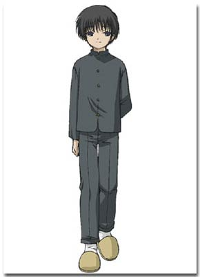
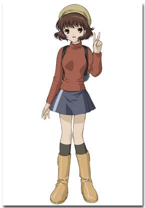
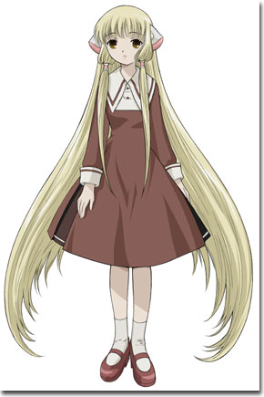

|  | A down-on-his-luck farm boy from Hokkaido who has moved to Tokyo after failing his college entrance exams. Having grown up isolated out in the country, Hideki knows little about persocoms and is awkward around others. Despite this, he is kind-hearted and does his best to take care of and teach Chi. When he's not attending prep school in preparation to retake his college entrance exams, Hideki works at the Japanese pub My Pleasure. |
|  | Hideki's easygoing neighbor and friend. The same age as Hideki, Shinbo also attends the same prep school. He helps Hideki get accustomed to city life and persocom ownership. Shinbo is the owner of the mobile persocom Sumomo, and is also friends with Minoru, whom he met through an Internet persocom user forum. |
|  | The pretty young manager of Hideki's apartment building. Chitose often helps out the impoverished Hideki by offering him hand-me-down clothes for Chi and homemade meals. |
|  | A boy from a wealthy family who builds custom persocoms as a hobby. Despite his young age, Minoru is an expert on persocoms; he also appears to have special concern for his persocom creation, the life-like Yuzukii. He offers advice to Hideki about persocoms, and also uses his contacts in the Internet persocom user community to discover clues about Chi's mysterious past. |
|  | Daughter of the owner of the Japanese pub My Pleasure. A cheerful and flirtatious high school student that enjoys teasing Hideki, Yumi also works part-time at the pub after school. |
|  | The innocent and sweet persocom that Hideki found in a garbage pile. Chi has some form of memory protection hiding her inner workings, but she appears to have little software installed besides a learning program. Chi learns by imitating Hideki and reading, but she sometimes ends up in trouble thanks to her childlike nature. Chi's origins are a mystery, but she appears to be almost exactly like a real girl; could she be one of the legendary 'Chobits' persocoms? |